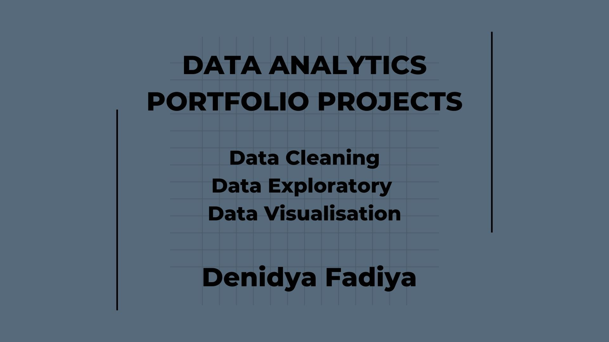

Organized and detail-oriented Data Analyst enthusiast,
experienced in managing Financial data. An out-of-the-box
thinker with Problem Solving Skill, Numeracy Skill, Structured Thinking and Story
Telling Skill.
Get Started
About me

I have developed my greatest interest towards Data Analysis,
With my previous experience as an Accountant, i dealt with plenty of data
on a daily basis. and it makes me wonder, what can i do with these data
other than making financial statements?
Looking at my background as an Accountant, I have plenty of transferable
skills to the skills required to be a Data Analyst, such as Analytical,
Numeracy, Attention to Details, Business, and Communication skill.
My interest about Data Analysis is Data can provide all of the answers needed
to understand about business process, customers and many more,
I enjoy exploring and analyzing data which helps me to discover new things,
behaviour, and insights. Data can also help me to make a proper reports which
has always been my favorite. With data, I get to use my critical analytical thinking
with the side of creativity.
Compliations of Tableau Interactive Dashboard.
Tableau is used to visualize data that have
been explored in SQL, Using filter in Interactive
Dashboard for compact reports